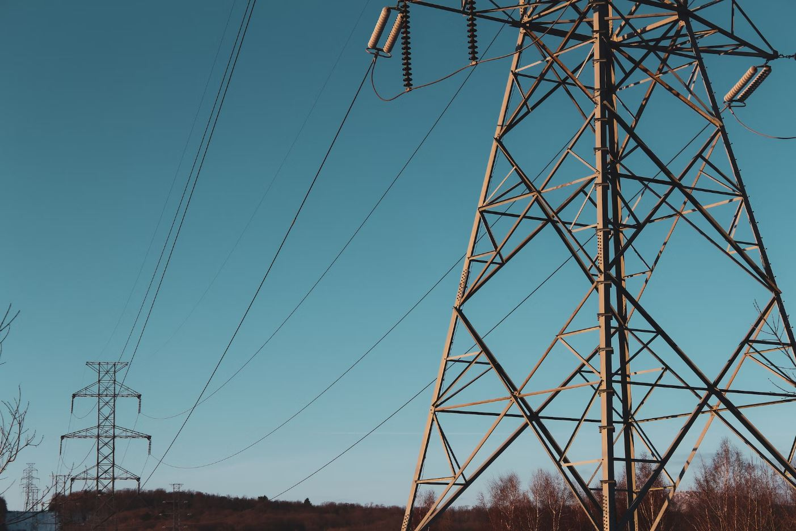

Having spent 4 years as an electrical engineer consultant for Jacobs, I've come away with experience in renewables, transmission and distribution, and traction rail projects. Through my experience in managing small scale transmission projects, to working on some of ANZ’s largest infrastructure projects, I have developed strong project engineering skills which have further helped me to deliver value and effective solutions to ourclients.
Drawn to continual learning and creative problem solving, I am looking for opportunities for a new start in emerging technology sectors.
Projects I've worked on:
- City Rail Link - Auckland
- Cross River Rail - Brisbane
- Level Crossing Remove - Melbourne
- Warwick Solar Farm